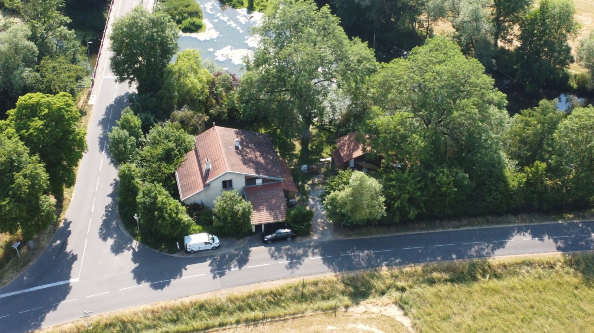
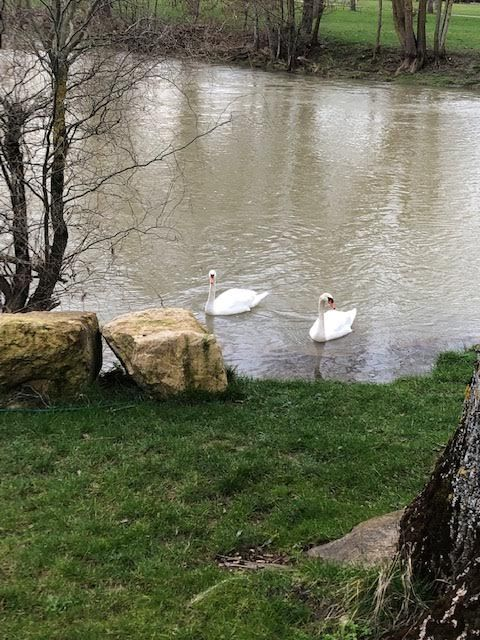
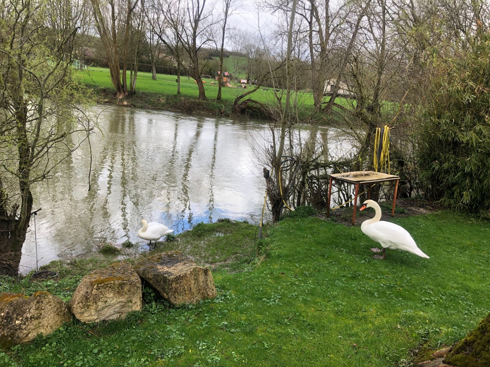
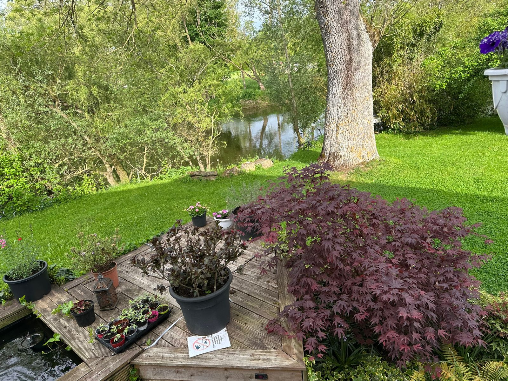
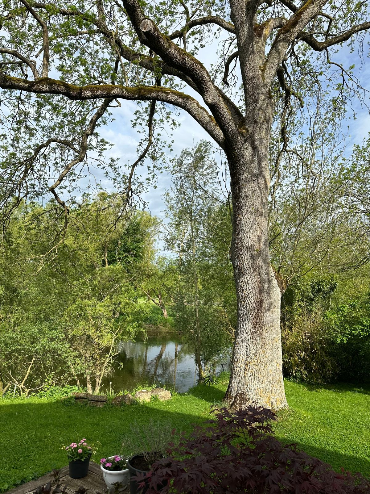
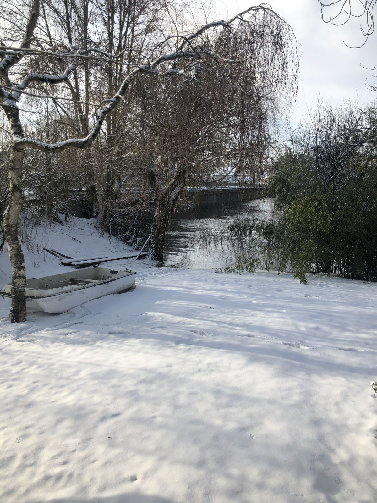
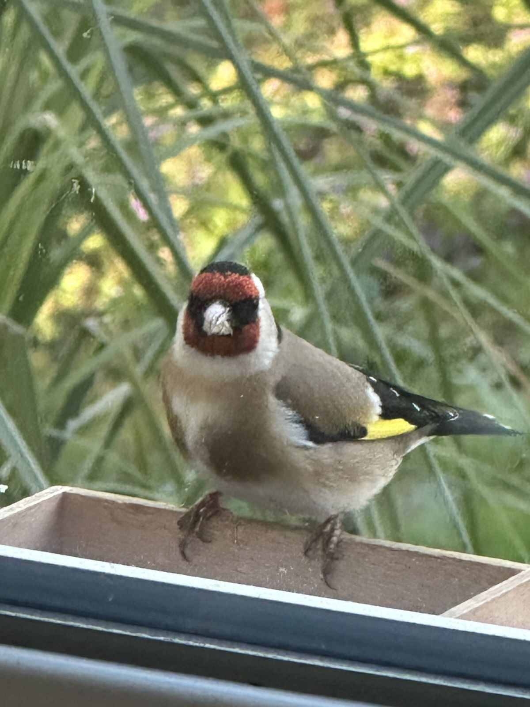
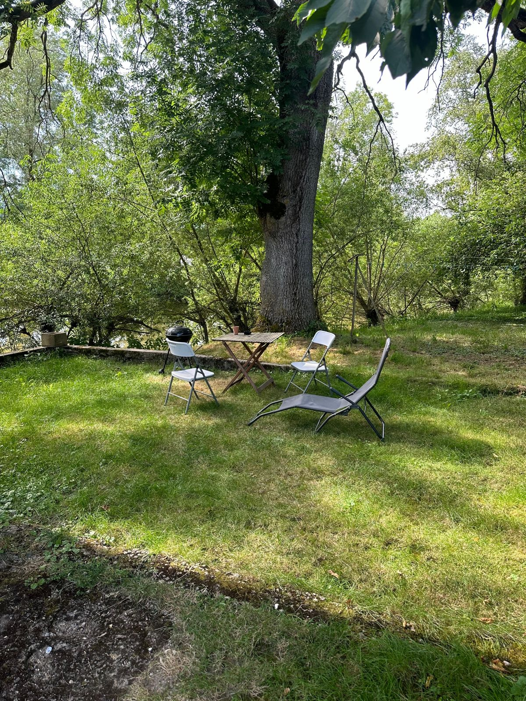
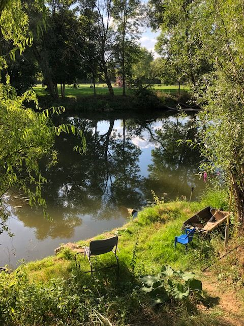
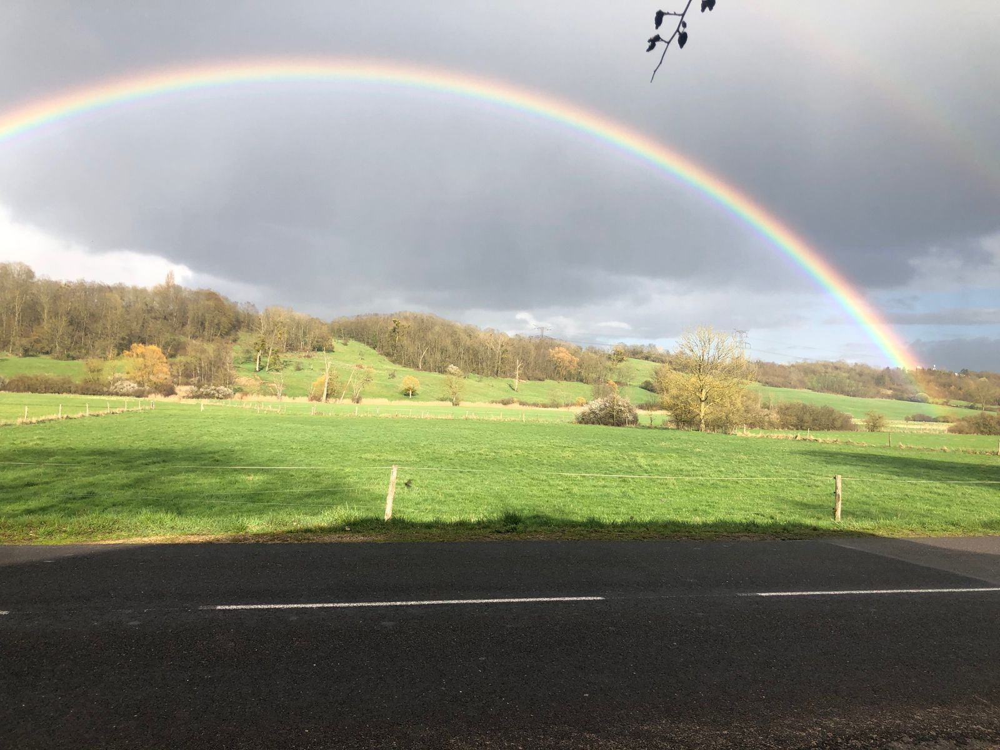

Séjour nature à Pulligny — près de Nancy, Toul, Lunéville, Neuves-Maisons & Vosges
Deux logements au bord de la rivière : Tiny House & Studio Perché. Parfait pour la pêche, les couples, les familles, les professionnels en déplacement et les voyageurs en route vers le Sud. À 20 min de Nancy, proche de Toul, Lunéville, Neuves-Maisons & aux portes des Vosges.
Accès & Avis Clients
Adresse :
1295 rue de Pierreville
54160 Pulligny
Florian est Superhôte Airbnb, avec plus de 280 avis. Lisez les avis de nos voyageurs :
Hébergement proche de Nancy, Toul, Lunéville, Neuves-Maisons et des Vosges
Situés à Pulligny, au bord de la rivière, nos hébergements offrent calme, nature et confort. À 20 min de Nancy et proches de Toul, Lunéville, Neuves-Maisons et des Vosges.
Étape idéale vers le Sud, à 20 min de Nancy
Idéal pour voyageurs venant d’Allemagne, Pays-Bas, Belgique vers le Sud de la France. Parking privé, arrivée tardive possible, accès rapide A31.
Zwischenstopp nach Südfrankreich (DE)
Perfekt für eine Übernachtung auf dem Weg nach Südfrankreich. Ruhige Natur, Parkplatz, nahe A31.
Tussenstop richting Zuid-Frankrijk (NL)
Ideaal voor een rustige tussenstop richting Zuid-Frankrijk. Rivier, rust, parkeren, dichtbij de A31.
Équipements & avantages
- 20 min de Nancy — proche Toul, Lunéville, Neuves-Maisons, Vosges
- Nature, rivière, pêche 🎣
- Parking privé
- Arrivée tardive OK
- Wi-Fi rapide